CSGO RushB中文网
CSGO RushB中文网
在9月18日更新中，V社为CSGO添加了游戏身份验证代码，允许第三方网站和应用访问玩家自己的官方匹配历史纪录。针对这一功能，CS:GO Stats网站已经升级，现在能够自动收集玩家的竞技模式比赛Demo，并进行分析，供玩家查询战绩等详细数据。
除了战绩，CS:GO Stats能够分析出Demo中所有玩家的详细记录，包括：
显示匹配队友及对手的段位、VAC状态
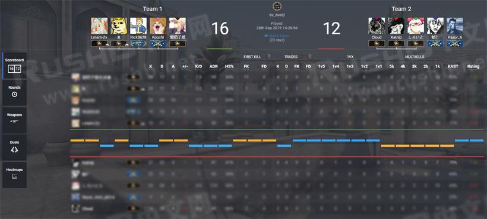
*如果是被封禁玩家，会在头像前显示VAC图标
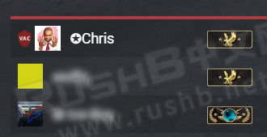
每回合击杀记录（谁打谁，使用什么武器），包括残局1v几
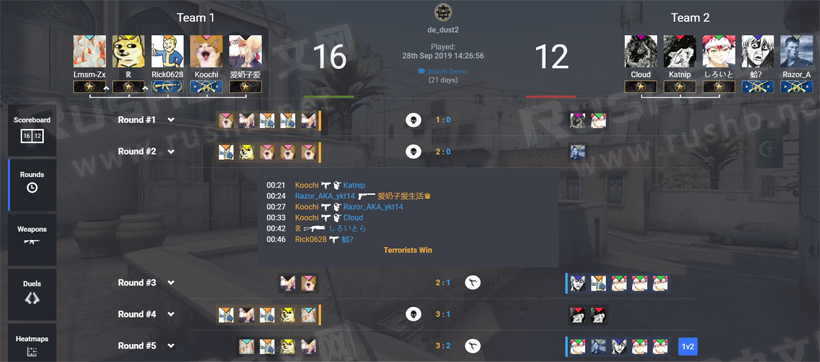
武器使用排行（击杀数、爆头率、命中率、造成伤害等等）
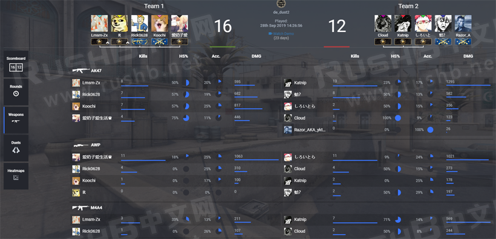
对枪胜负
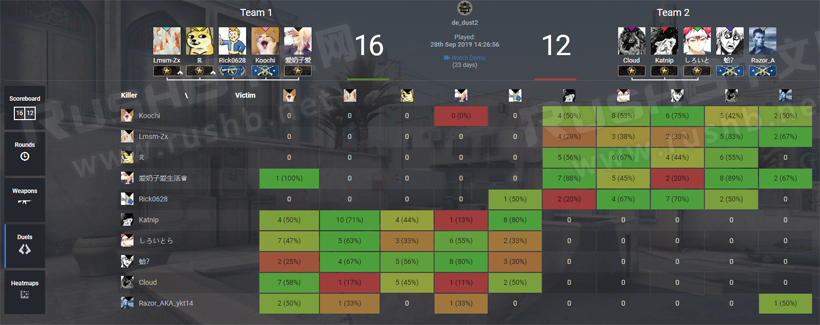
地图上击杀位置、投掷物位置（爆烟、爆闪等）
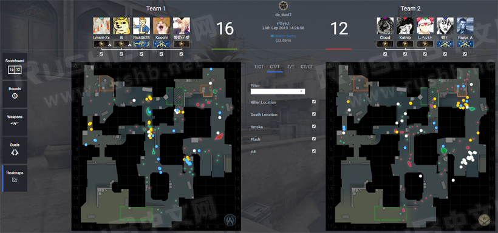
所有比赛记录都是公开的，你可以将比赛链接分享给好友供他们查看，例如：
https://csgostats.gg/match/4792125
为什么推荐CS:GO Stats？
大部分玩家并没有手动下载Demo的习惯，过时的Demo则会被V社删除，而CS:GO Stats网站（https://csgostats.gg/）能够帮助玩家自动收集并保留今后Demo并进行分析，可随时打开网站查看自己所有官匹比赛详细数据，必要时还能下载保存在网站的DEMO在游戏中回放。
另外，提供的比赛数据包括参赛玩家的段位和封禁状态，这些都是游戏中没有的。
如果你打算使用此网站，首先要说明下：
由于CS:GO Stats网站用户众多，服务器资源少，自动收集的Demo还需要按队列下载到服务器上分析，所以玩家的匹配记录并不会第一时间显示，新比赛快的话2小时，慢的话可能要第二天才分析完毕，而旧比赛网站并不会自动收集，需要自己手动提交Demo链接。
*玩家的官匹Demo只会在V社服务器上保留一周左右时间，超过这段时间，CS:GO Stats网站也无法获取到被删除的DEMO。
CS:GO Stats使用方法
首先，打开网站：https://csgostats.gg/，点击右上角的LOGIN WITH STEAM按钮登录Steam帐户。登录后会显示如图页面：
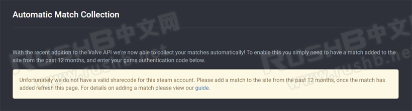
大意是：
随着V社最近添加的API接口，我们（CS:GO Stats）现在能够自动收集你的比赛！如要使用此功能，你只需要在过去12个月年向本站提交一场比赛（Demo链接），然后再提交你的游戏身份验证代码即可。
接下来，打开CSGO游戏客户端——观战——我的比赛，任意选择自己参与的比赛，点击右下角的“分享”按钮，生成比赛下载链接（点击后会自动复制剪贴板）。
*比赛下载链接即官匹Demo下载链接
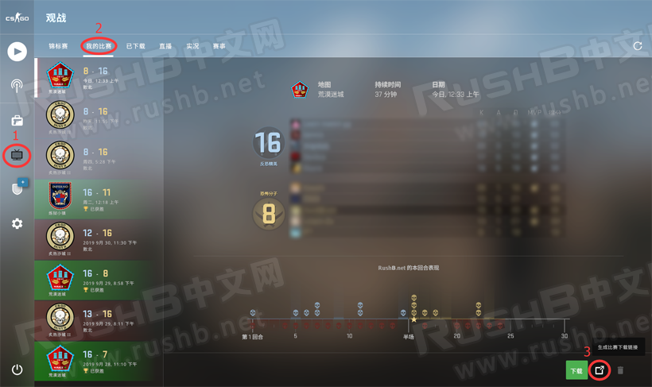
然后回到网站，点击网站右下角的“Add Match”，会展开上拉框，在输入框内粘贴刚才的比赛下载链接，然后点击三角按钮提交.
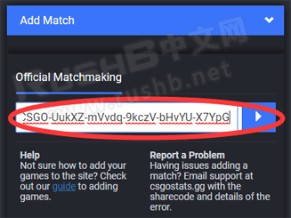
之后提交的Demo会进入队列，等待网站分析，多长时间队列旁会有提示，如图，时间长短不一，取决于网站负载。
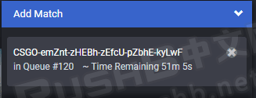
等待网站完成分析Demo后，打开网站，便会提示让你提交“游戏身份验证代码”，点击如图位置的“here”，进入Steam客服页面：
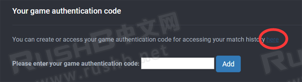
进入Steam客户页面后，在游戏验证码栏中，点击如图按钮创建验证代码：
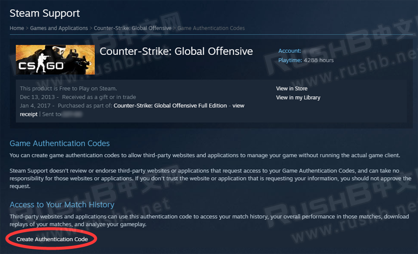
将创建好的游戏身份验证代码复制粘贴到CS:GO Stats网站上，点击“Add”提交。
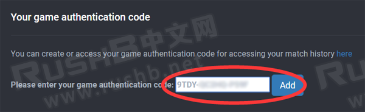
提交后如图，这样游戏身份验证代码已经提交给CS:GO Stats网站，之后CS:GO Stats会自动收集你新完成的官服竞技模式匹配比赛并进行分析。
*如果要解析旧比赛，需要手动提交Demo链接
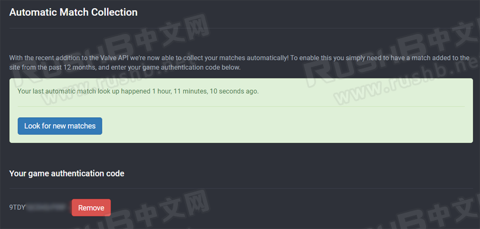
查看官匹数据
注意：如果是刚刚打完的比赛并不会马上显示在CS:GO Stats网站上，因为需要将Demo下载到CS:GO Stats服务器上进行分析，快的话2个小时，慢的话可能要半天。
打开CS:GO Stats网站，登录Steam账号，点击右上角的Steam名称——View Profile
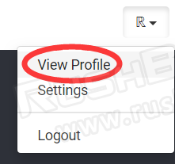
这里会显示通过Demo分析出的个人游戏数据，点击左边栏的“Matches”
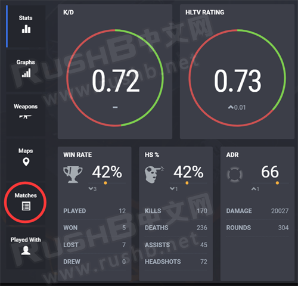
便能进入自己参与的比赛列表，再点击比赛就能进入比赛详情页，剩下的自行慢慢查看吧。
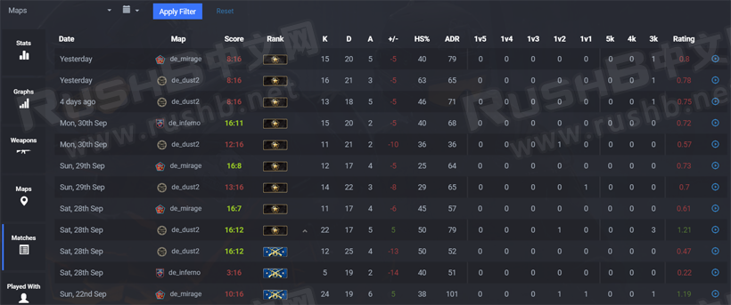